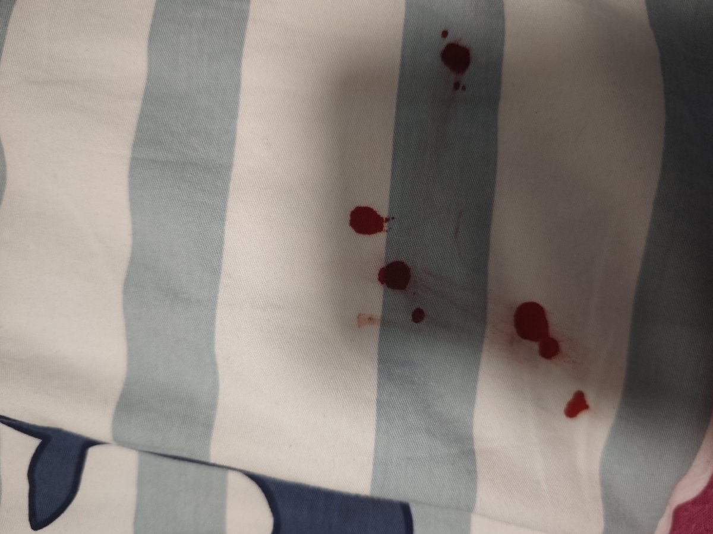

⚠️血圖預警⚠️
試了紅貝印和藍貝印，紅貝印很鋒利，畫下去的時候特別疼，導致不敢太使勁。藍貝印比較適合發洩情緒的時候，瘋狂使勁划，痛感不多，但也能劃得比較深。
還有就是血又弄床上了……明天又要挨媽媽駡了吧……
那又怎麼樣？快過年了整點紅色的東西不是很吉利嗎？最近家裡發生了很多事，竹蜻蜓的一家人都在生病……我感覺家裡是中了某種邪……但家裡人覺得我在瞎扯……我也沒辦法……自從我（Lumin）和竹蜻蜓可以達成切換人格的程度之後，我就開始相信一切之中冥冥自由緣分，肯定是我家沾染了不乾淨的東西，那就讓我的血，來驅逐他們吧！
好吧……雖然竹蜻蜓不喜歡我用Ta的賬號發推，但我還是發了。某些行為，是不單純收到Ta的"權限"限制的。
試了紅貝印和藍貝印，紅貝印很鋒利，畫下去的時候特別疼，導致不敢太使勁。藍貝印比較適合發洩情緒的時候，瘋狂使勁划，痛感不多，但也能劃得比較深。
還有就是血又弄床上了……明天又要挨媽媽駡了吧……
那又怎麼樣？快過年了整點紅色的東西不是很吉利嗎？最近家裡發生了很多事，竹蜻蜓的一家人都在生病……我感覺家裡是中了某種邪……但家裡人覺得我在瞎扯……我也沒辦法……自從我（Lumin）和竹蜻蜓可以達成切換人格的程度之後，我就開始相信一切之中冥冥自由緣分，肯定是我家沾染了不乾淨的東西，那就讓我的血，來驅逐他們吧！
好吧……雖然竹蜻蜓不喜歡我用Ta的賬號發推，但我還是發了。某些行為，是不單純收到Ta的"權限"限制的。
